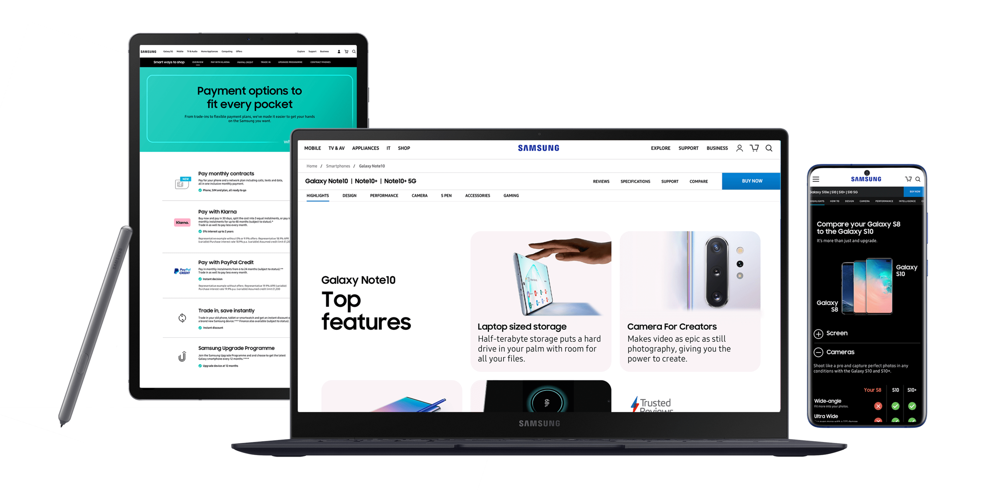
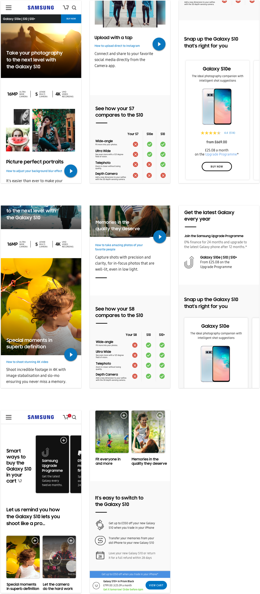

Optimising samsung.com
I led UX design in a cross-functional team of data analysts & developers tasked with identifying key areas within the user journey that had the most impact on purchase conversion. Our remit was to test data-led hypothesis, live on samsung.com in order to increase conversion rate.

Problem space
Despite a huge number of consumers visiting the website, samsung.com was not converting traffic into sales. Increasing the conversion rate on samsung.com therefore presented a huge opportunity to increase sales.
How can we improve conversion rather than trying to spend our way around the problem with advertising?
For the launch of the new Galaxy S10, we analysed consumer insights data to learn which S10 features (camera, screen, battery life etc) were important to customers. We launched a personalised comparison table for users who view the page on a Galaxy S6, S7, S8 or S8+ comparing their device with the Galaxy S10 and S10+, encouraging these customers to upgrade.

Increased emphasis on driving paid search traffic to samsung.com to coincide with the Galaxy S10 launch meant a need to create a more personalized landing experience. We created personalised landing pages for different user cohorts e.g a returning customer who was more likely to convert we surfaced ways of reducing and spreading the cost.

Personalisation
Consumer insights highlighted areas where customers lacked understanding of certain features of the Galaxy Watch Active;
The pages below show personalised modules that were served to both groups of users, with a generic version for desktop users.
Impact
Our efforts to personalise the user experience for different audiences viewing the S10 product pages resulted in a +31% percentage uplift in S10 Cart Add conversion